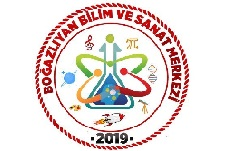

Biz Kimiz?

CyberZlıyan, Boğazlıyan BİLSEM tarafından oluşturulan bir siber güvenlik farkındalık projesidir. Öğrenciler, öğretmenler ve velilere siber dünyada güvende kalma yöntemlerini öğretmeyi amaçlıyoruz.
Son Haberler
17.03.2025CyberZlıyan projesi kapsamında "Güvenli İnternet Kullanımı" semineri düzenlendi.
10.03.2025Siber Zorbalıkla Mücadele Atölyesi'ne öğrencilerden yoğun ilgi!
05.03.2025Yeni eğitim modülleri sisteme eklendi! Hemen inceleyin.
Tüm Haberler